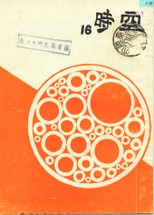

《時空》第十六期
目錄
學會的話
陳孟琪
1
不是流水帳
編輯
2
關於中國物理學刊上的論文
時空記者
4
有關普物的意見
葉炳輝
6
以管窺天
天文組
9
人之患
非 里
13
一群大男孩
鳳 凰
16
與大一閒談十分鐘
沈 兄
18
他的故事
伯
20
新詩二首
美伯
22
閒談古典音樂
陳農端
24
飲水器
水 桶
28
痛快之至
呵 欠
29
前瞻與後顧
Morse作
朱有花、曾君凱譯
31
從轉系談起
非 歐
35
Take Away Your Billion Dollars
36
物理王國�堛漪K秋
孟 琪
37
系友來鴻
40

出版者：台大物理學會
出版日期：民國六十二年九月
台大訓導處登記第209號